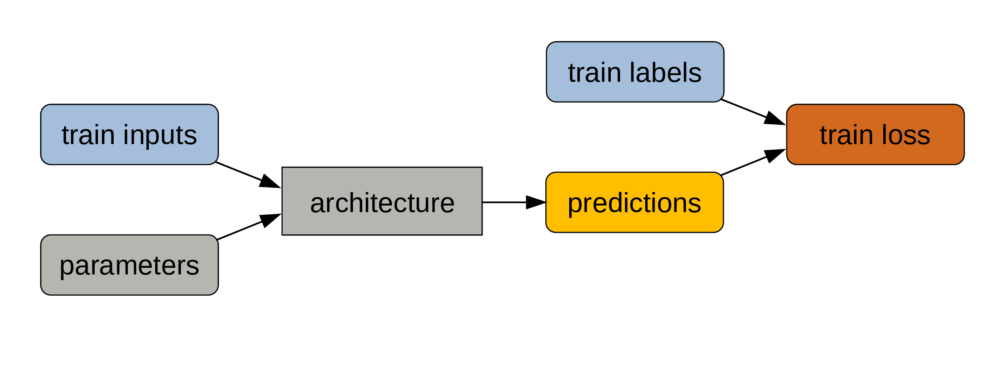
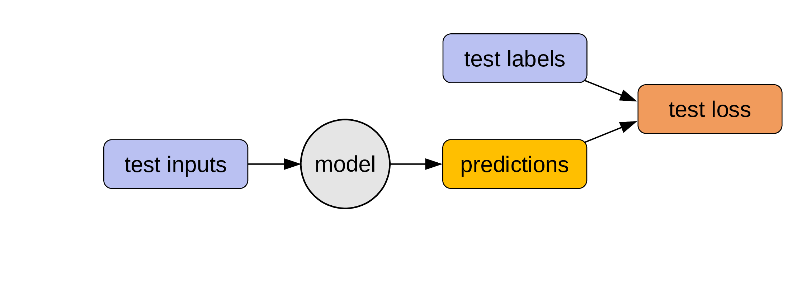

Overarching concept of deep learning
Neural networks learn by adjusting their parameters automatically in an iterative manner. This is derived from Arthur Samuel’s concept.
It is important to get a good understanding of this process, so let’s go over it step by step.
Decide on an architecture

The architecture won’t change during training. This is set. The type of architecture you choose (e.g. CNN, Transformer, etc.) depends on the type of data you have (e.g. vision, textual, etc.). The depth and breadth of your network depend on the amount of data and computing resource you have.
Set some initial parameters

You can initialize them randomly or get much better ones through transfer learning.
While the parameters are also part of the model, those will change during training.
Get some labelled data

When we say that we need a lot of data for machine learning, we mean “lots of labelled data” as this is what gets used for training models.
Make sure to keep some data for testing

Those data won’t be used for training the model. Often people keep around 20% of their data for testing.
Train data and parameters are passed through the architecture

The train data are the inputs and the process of calculating the outputs is the forward pass.
The outputs of the model are predictions

Compare those predictions to the train labels

Since our data was labelled, we know what the true outputs are.
Calculate train loss

The deviation of our predictions from the true outputs gives us a measure of training loss.
Parameters adjustement
The parameters get automatically adjusted to reduce the training loss through the mechanism of backpropagation.
This is the actual training part.
This process is repeated many times. Training models is pretty much a giant for loop.
From model to program

Remember that the model architecture is fixed, but that the parameters change at each iteration of the training process.
While the labelled data are key to training, what we are really interested in is the combination of architecture + final parameters.

When the training is over, the parameters become fixed. Which means that our model now behaves like a classic program.
Evaluating the model

We can now use the testing set (which was never used to train the model) to evaluate our model: if we pass the test inputs through our program, we get some predictions that we can compare to the test labels (which are the true outputs).
This gives us the test loss: a measure of how well our model performs.
Use the model

Now that we have a program, we can use it on unlabelled inputs to get what people ultimately want: unknown outputs. This is when we put our model to actual use to solve some problem.